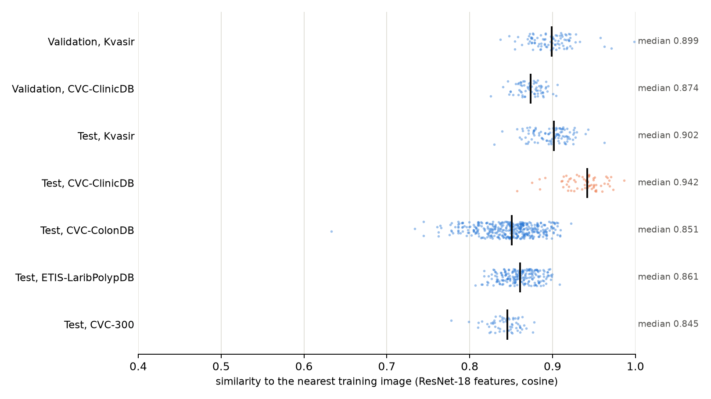
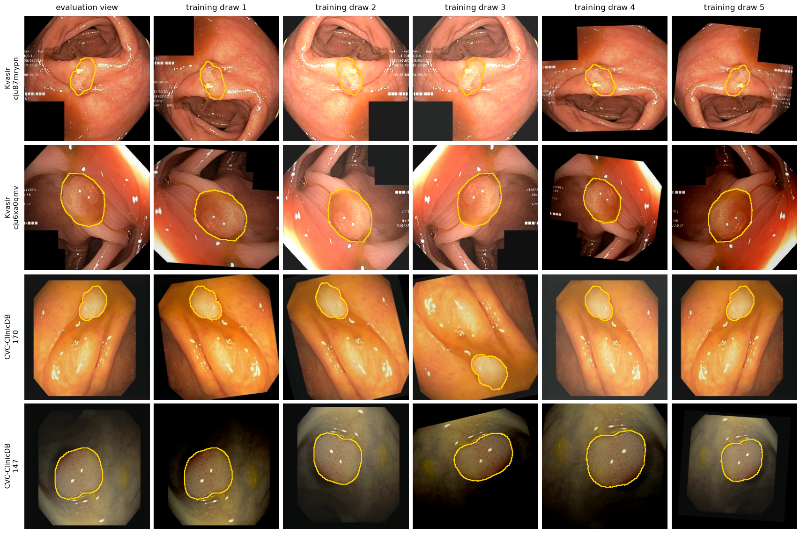

Stage 2. A ruler we can trust
Before training anything for real, we built the parts every experiment shares: the environment, the data and its split, the metrics, the loader and the training loop. Each one was checked against an independent reference, and the checks found three problems in published code and in libraries.
Five steps, one commit each
Every step ends with tests, and every number below comes from a script, not from typing.
2.1 Environment
Pinned versions, one-command setup, and a reliable way to measure peak GPU memory on the Mac.
env.py2.2 Data and split
Download with checksums, a full audit, and a validation split by whole video sequences.
Data inventory2.3 Metrics
Dice, IoU, Boundary IoU and PraNet-style mDice, each matched against an independent implementation.
metrics.py2.4 Data loader
One augmentation for every model, with image and mask proven to move together.
data.py2.5 Training loop
Losses, one loop for every model, an overfit check, and a timed epoch that sets the budget.
train.pyWhat the checks found
None of these would have shown up as an error. Each one would have quietly changed the numbers.
The CVC-ClinicDB test set shares videos with training
Its 62 test frames come from 26 of the dataset's 29 videos, and all 26 also have frames in training. Test images sit much closer to training images than any other test set.
PraNet's structure loss does not weight its BCE term
A deprecated argument, reduce='none', collapses the BCE to one number, and the boundary weights cancel out. Only the IoU half is weighted. Polyp-PVT copied the same line.
Loader workers repeated each other's augmentations
albumentations 2 ignores the global seed, and every worker started from the same one. With two workers, only half the augmentations were distinct.
How close each evaluation image is to the training set
For every image, the similarity of its features to the most similar training image. CVC-ClinicDB test (orange) stands apart: its frames are near-copies of training frames.

scripts/make_splits.py. Data: data_inventory.mdThree metrics, seen side by side
Move the prediction and watch the scores. Boundary IoU only counts pixels near the edge, so it punishes a small shift of a large polyp that Dice and IoU barely notice.
Overlap calculator
The true polyp is fixed. Shift and resize the prediction. Boundary width here is 3 pixels, 2% of this 120 × 120 grid's diagonal, the same rule as in our evaluation.
- Overlap
- Missed
- Extra
Only these edge bands count for Boundary IoU
Why "mDice" is not Dice at 0.5
PraNet stretches every prediction to the full 0-1 range, then averages Dice over 256 thresholds. Lowering the confidence alone changes nothing at 0.5. Add a small bias as well and the whole map slides to one side of 0.5: Dice at 0.5 on the raw output collapses, while the stretched mDice does not move.
A synthetic polyp with a simulated prediction, computed in your browser with the same steps as seg.metrics.pranet_curves: stretch, round to 8 bits, threshold 256 times. This is why every table in this project says which Dice it shows.
What the models will see
Training images after augmentation, with the mask outline on top. If the outline ever left the polyp, the pipeline would be broken.

make preview.In the code
Three short pieces that carry most of the weight.
The published loss, and what PyTorch does with it
wbce = F.binary_cross_entropy_with_logits(pred, mask, reduce='none')
wbce = (weit*wbce).sum(dim=(2, 3)) / weit.sum(dim=(2, 3))reduce expects true or false, so the string counts as true and the first line returns one averaged number. The second line multiplies it by the weight map and divides by the map's sum, which gives back the same number. The weights do nothing here. A test runs this exact code and pins the behaviour.
Boundary IoU as one max-pool
background = (~mask).float().unsqueeze(1)
padded = F.pad(background, (dilation,) * 4, value=1.0)
near_background = F.max_pool2d(padded, kernel_size=2 * dilation + 1, stride=1).squeeze(1) > 0
return mask & near_backgroundThe official code erodes the mask d times with a 3 × 3 square. One max-pool with a (2d + 1)-wide window over the background gives the same pixels and runs on the GPU for a whole batch. Tests compare it with the official function, pixel by pixel.
One augmentation stream per worker
def worker_init_fn(worker_id: int) -> None:
info = torch.utils.data.get_worker_info()
transform = getattr(info.dataset, "transform", None)
transform.set_random_seed(info.seed % 2**32)PyTorch gives each worker its own seed, derived from the loader's seed. Handing it to albumentations makes every worker draw different augmentations, and the same seed repeat them exactly.
Does the whole pipeline work?
Two checks before any real experiment: can a model memorise 32 images, and how long does an epoch take?
Overfit check: 32 images, no augmentation
Trained and scored on the same 32 images. A working pipeline must pass a validation Dice of 0.9. Hover the line for each epoch.
- Validation Dice
- Validation Boundary IoU
One epoch on the full training set
1,292 training and 158 validation images at 256 px, batch 16. The first timing showed two slowdowns: loader workers restarted every epoch, and the CPU waited for the GPU after every step.
| Decision | Confirmed as | Evidence |
|---|---|---|
| Validation split | 90 Kvasir images; CVC-ClinicDB videos 11, 16 and 29 | The only three videos with no test frame |
| Metrics | Dice and IoU at ≥ 0.5 per image, Boundary IoU, PraNet mDice | Match SMP, MONAI, the official Boundary IoU code and a literal PraNet port |
| Peak memory | torch.accelerator peak counter | Reads known allocations exactly on MPS |
| Epoch budget | 50 epochs for every model | About 32 minutes per run; raised if still improving at the end |
What can still go wrong
- MATLAB rounding of thresholdsTies at a threshold change per-image mDice by at most 0.0016 in our measurement. MATLAB itself cannot be run here, so stage 3 is the real test.
- A near-copy inside KvasirOne validation image is 0.999 similar to a training image. One in 90 cannot steer model selection, so it stays, and the report names it.
- Reading CVC-ClinicDB as a generalisation testIts scores will be reported, but labelled as performance on near-copies of training frames.
- Fifty epochs may be too fewIf validation Dice still rises at the end of the first full run, the budget goes up for every model before any comparison.
- Throttling in long runsEpoch times were measured over three epochs. A 50-epoch run will show whether the fanless laptop slows down, and the timing table will say so.
- A library update changing resultsEvery package version is pinned in the lock file, and each run records its versions and commit.
Questions you should be ready for
Why split CVC-ClinicDB by video and not by frame?
Frames of one video show the same polyp from similar angles. With a frame-level split, validation would contain near-copies of training images and reward memory. Whole videos in validation measure what we care about: new polyps.
How did you know which video each frame came from?
Guessing from image similarity was not reliable: only 15 of the 28 lowest-similarity pairs were true boundaries. The dataset publishes a frame-range table for its 29 videos, so we used it, and checked it against the images: similarity separates its boundaries with an AUC of 0.965.
How do you know your metrics are right?
Each one is compared with an implementation we did not write: SMP and MONAI for Dice and IoU, the official code for Boundary IoU, and a line-by-line port of PraNet's MATLAB for mDice. They agree exactly on hundreds of random masks, including empty ones.
Why report Boundary IoU at all?
For a large polyp, most pixels are interior and easy, so Dice and IoU stay high even when the outline is off. Boundary IoU only counts pixels near the edge. In our calculator a 2-pixel shift leaves IoU at 0.92 but halves Boundary IoU, to about 0.5.
What does the overfit check prove, and what not?
It proves the plumbing works: images, masks, loss, optimiser and metrics fit together, because a model can memorise 32 images. It says nothing about generalisation, which is what the real runs measure.
Your training got 2.3 times faster. How did you find the cause?
By measuring parts separately. A bare training step ran at 36 images per second, and validation took 26 ms per image on its own, so the real loop was losing time elsewhere: loader workers restarting each epoch, and a per-step sync between CPU and GPU.
Can a run be repeated exactly?
Order and augmentations repeat exactly for the same seed, and the overfit run reproduced its best Dice to every printed digit. Apple's GPU backend does not promise bit-for-bit repeatability in general, so conclusions rest on three seeds and confidence intervals.
Glossary
- Data leakage
- Test or validation data that is too similar to training data, so scores look better than they should.
- Video sequence
- One colonoscopy recording. CVC-ClinicDB's 612 frames come from 29 of them.
- Checksum
- A fingerprint of a file. If two downloads have the same checksum, they are the same file.
- Augmentation
- Random flips, rotations and colour changes that show the model more variety than the raw images.
- Loader worker
- A background process that reads and augments images while the GPU trains.
- Overfit check
- Training on a tiny set until it is memorised, to prove the pipeline can learn at all.
- Epoch
- One pass over all training images.
- Lock file
- The exact version of every package, so the environment can be rebuilt identically.